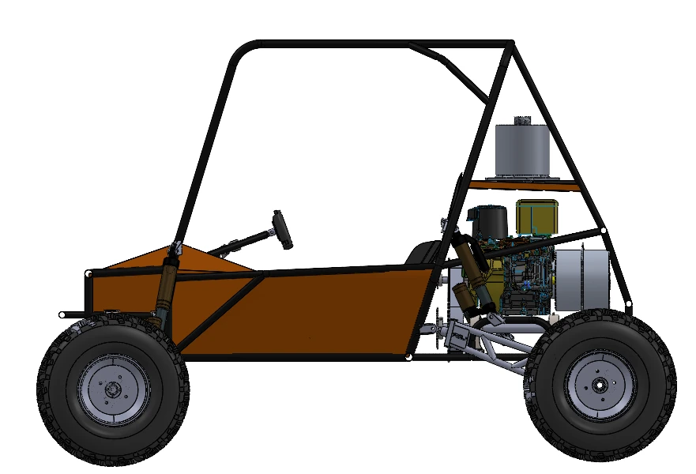
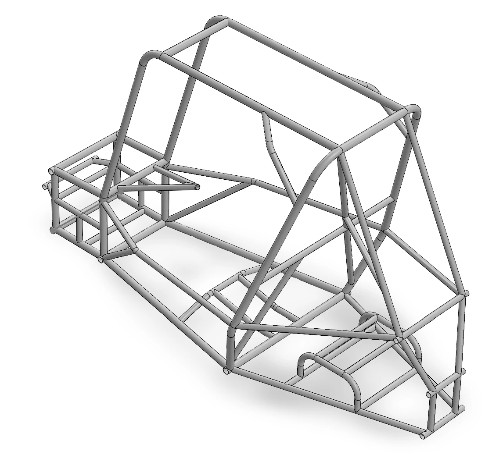
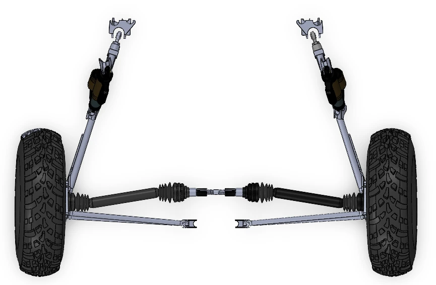
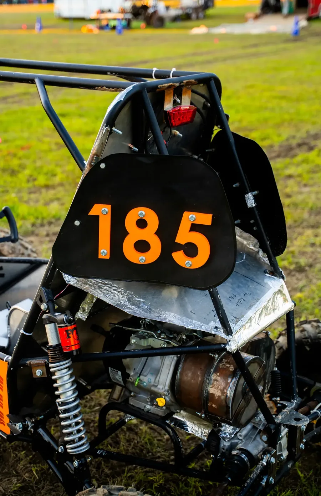

Car 185 at a glance
Car 185 was Longhorn Baja Racing’s first Baja SAE vehicle. The team designed it for rule compliance, durability, and trackside service, with a modular chassis that could be fabricated in a shared shop. We kept the driveline rear-wheel drive and used proven off-the-shelf parts where they saved build time or simplified maintenance.
I led a 12-person powertrain team, owned the drivetrain layout in SolidWorks, and developed the CVT tuning matrix and torque-path analysis. The chassis, dynamics, ergonomics, manufacturing, and electronics sections describe the broader team’s work. Read the full design paper.
| Vehicle parameter | Design-review record |
|---|---|
| Wheelbase and overall width | 72.5 in and 62 in |
| Front/rear static weight distribution | 40/60 |
| Ground clearance | 12.5 in design value |
| Front and rear wheel travel | 12 in at each axle |
| Turning | 1.5 turns lock to lock and an 8 ft outside radius |
| Curb weight and top speed | 450 lb and 28 mph design targets |
| Acceleration | 100 ft and 150 ft tests planned at design review |


Packaging the drivetrain
I coordinated how the transverse engine, CVT, jackshaft, chain drive, and guards fit between the chassis tubes. The transverse layout shortened the driveline’s fore-aft envelope. We worked with the chassis team on the engine support and made the belt accessible through the CVT cover so it could be serviced with the assembly still in the car.
Torque path. Spec engine → CVTech belt CVT → jackshaft and chain reduction → Yamaha Grizzly 660 differential → CV axles and rear hubs.
The CVT varies the ratio with engine speed and load. The chain and differential contribute fixed reductions. Multiplying the three stages gives the overall reduction, which determines axle speed and torque multiplication. The team confirmed the Grizzly ring-and-pinion ratio at 3.66∶1 by teardown. Our torque-path calculation placed the differential within its OEM operating range. The paper records that result and leaves the exact torque margin, final chain ratio, and CVTech ratio endpoints unspecified.

Gearing worksheet
The portfolio worksheet models a Comet 790 CVT and two gear stages. Its fixed-stage product is 12.245∶1 for the modeled setup. The car’s design paper documents the CVTech and Grizzly driveline. Open the gearing worksheet.

| Modeled stage | Driver teeth | Driven teeth | Reduction |
|---|---|---|---|
| First | 21 | 60 | 2.857∶1 |
| Second | 21 | 90 | 4.286∶1 |
CVT tuning and cooling
I set up two primary-sheave configurations with 275 g and 230 g flyweights, both using the same 145 g spring. Holding the spring constant isolated the effect of flyweight mass on shift behavior. On the secondary side, I set up three units around springs 5051-1101 and 5051-1015 and preload positions A1 and A4 to study spring stiffness and preload. The paper records the available combinations and leaves the full unit-by-unit assignment unspecified.
We bench-checked CVT engagement, belt alignment, and power transfer. The test plan used a dynamometer to compare torque and power curves, followed by timed runs in the car to judge launch, shift behavior, and acceleration under real vehicle loads.
Working with the validation team, I studied airflow and temperature inside the CVT casing. The worst-case CFD model reached the study’s 360 K threshold after about 250 seconds of sustained maximum load. The tuning work separately used a 210°F belt-temperature ceiling. The airflow study identified a casing change to direct more air through the internal CVT channels for sustained operation.

Chassis and manufacturing
The chassis team built a 4130 chromoly spaceframe in five modules. Primary cage tubes were 1.25 in OD × 0.065 in wall and secondary bracing used 1.00 in OD × 0.035 in wall. MATLAB tube-sizing sweeps checked bending strength and stiffness, and ANSYS modeled impact, rollover, and torsion. The finished cage weighed 71.44 lb against a 75 lb target. The rear torsional case returned a modeled factor of safety near 1.0, and the paper flags the source load units as unresolved.


A half-scale prototype established the jigging, tacking, and welding sequence before the full-size build. The team cut and coped straight tubes in-house, outsourced bent members, and checked the completed assembly against CAD with the subsystems installed together.
Suspension, steering, and brakes
Suspension and wheel ends
The front double wishbones package the Fox coilovers on the lower arms. The rear semi-trailing arms use two toe links and extended CV axles that also act as lower locating links. The main spring rates were 125 lb/in front and 210 lb/in rear. Limit straps protect front upright clearance and keep rear axle movement within the usable range. The dynamics team used Lotus Shark to model camber and toe and checked bump and droop clearances on stands.


We used a modified OEM rear hub after evaluating a custom splined design. The 6061-T6 front upright returned a modeled factor of safety of 2.35 in one braking-and-steering case and 0.84 under the combined 7 g vertical, 3 g lateral, and 2.15 g braking load. The report carries the combined-load result as an open structural item.
Steering and braking
A shorter Narrco rack with Ackermann geometry freed space around the pedals and brake lines and simplified the steering column. The hydraulic disc brakes use a Tilton dual-master-cylinder pedal box with a mechanical bias bar. Custom rotors preserve material around their mounting holes while removing mass elsewhere.
The brake model predicted a 26 ft stop from 25 mph with 110 lb of pedal force. It used a 69.5 in wheelbase and 60/40 front/rear static weight split. The overall vehicle spec gives 72.5 in and 40/60, so the stopping estimate applies to the brake model’s stated inputs.
Driver fit and electronics
The ergonomics team modeled 5th- to 95th-percentile drivers in SolidWorks to check helmet clearance, steering reach, and pedal actuation. The build used a Kirkey seat, an adjustable pedal assembly, and quarter-turn body-panel fasteners for access.
The electronics team reduced its seven-channel design to a nine-component logger centered on an RP2040 and a six-axis IMU. The board targeted 100 Hz logging to microSD, with independent front and rear engine kill switches. The full design retained wheel speed, brake pressure, CVT temperature, display, and fan-driver circuits for later builds. The paper records bench validation as pending at design review and identifies supply fusing and bulk decoupling as open items.
Building and inspecting the assembly
I coordinated machining, welding, and assembly with the manufacturing group. We used the capabilities of our own shop when we chose how to make the mounts and guards. At assembly, the team had to locate each shaft and sprocket so the chain ran in line within the available clearance.
I used our design failure mode and effects analysis (DFMEA) to write assembly and inspection procedures. Those procedures cut our pre-competition build time by about 15%.
Checking the design under load
The design review documents CAD checks, physical fit-up, suspension travel checks, and component bench testing before the first powered run. The 450 lb curb weight and 28 mph top speed were targets at that stage. Measured values for those targets remain undocumented in the design review.
Later, during endurance testing, I led root-cause investigations into at least five powertrain failures. I documented what failed, presented corrective actions to team leadership, and took those changes back into testing. The failure modes we corrected did not recur in subsequent testing.
Results on car 185
The portfolio’s drivetrain design analysis reported about 12% less mass with a factor of safety of 2 under its competition load case. Our physical evidence came from the assembled vehicle, where endurance runs exposed failures that we could trace and correct.
Gearbox mount in design
For our next drivetrain layout, I’m designing the mount for an off-the-shelf gearbox. Once we got it shifting out of neutral, I could start reviewing its position relative to the engine, CVT casing, and frame.
Engine height and gearbox position
Lowering the engine could lower the vehicle’s center of gravity. Moving the gearbox rearward would make room, but it would also change the driveline geometry the dynamics team was using and could expose the gearbox beyond the frame. I raised both concerns during our layout review.


Ownership and next checks
I own the mount and its fit in the vehicle. Other powertrain members are developing gearbox concepts. I asked them to document their chosen ratios, gear arrangements, modules, and materials so we can review each design on the same terms.
Before we release the mount CAD, I’m checking clearances with the dynamics team and reviewing material and load assumptions with Simulation & Validation. Physical fit-up and testing are still pending for the mount.
Research paper
Longhorn Baja Racing — Vehicle Design, Analysis, and Development. Yash Tate, Retvin Pant, Peter Vlahakis, and Abigail Mears. The 55-page paper covers car 185’s design requirements, subsystem architecture, calculations, manufacturing, and validation for the 2026 Baja SAE season.